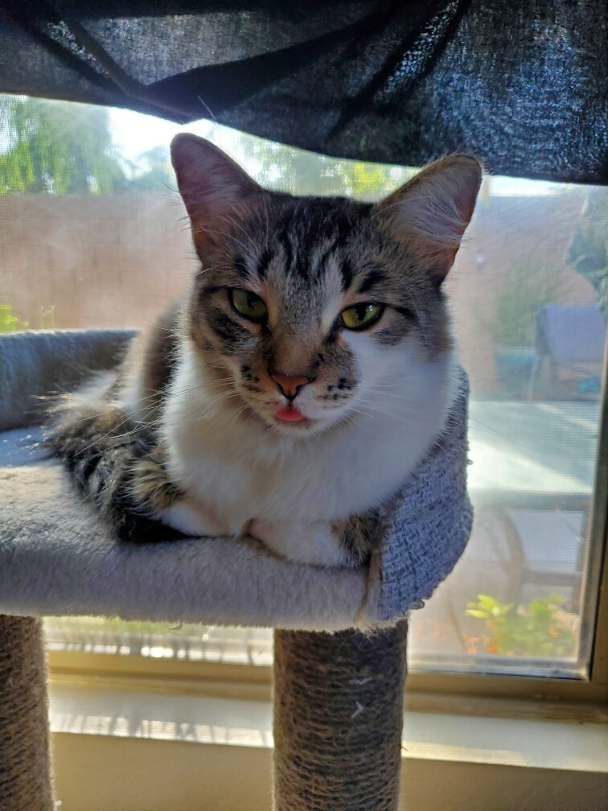
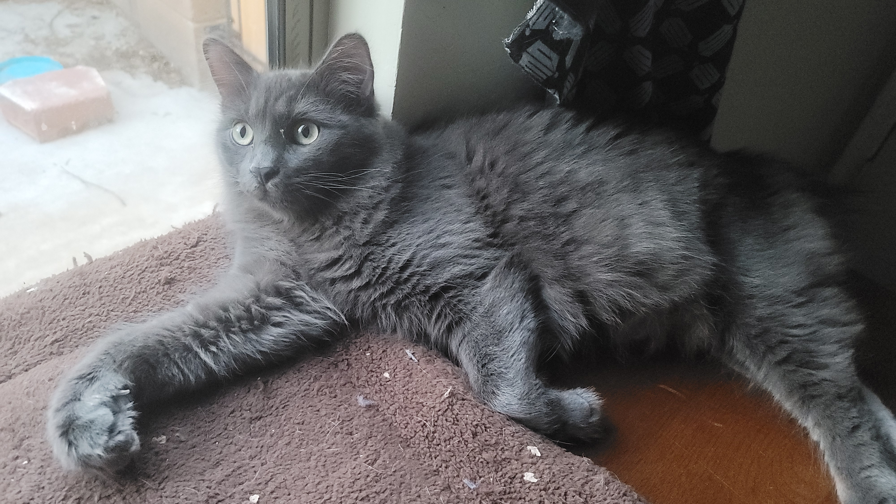
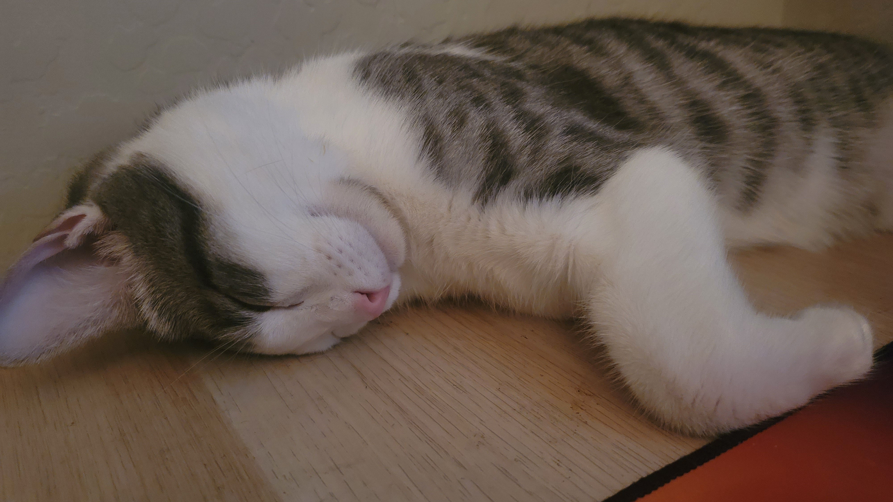

About Natasha
Interests
My interest range from...
Favs
Some of my favorite things are...
Hobbies
Some of my hobbies include...
Pets
I own 4 cats and 10 fish. I also provide food and water for some community cats daily.


